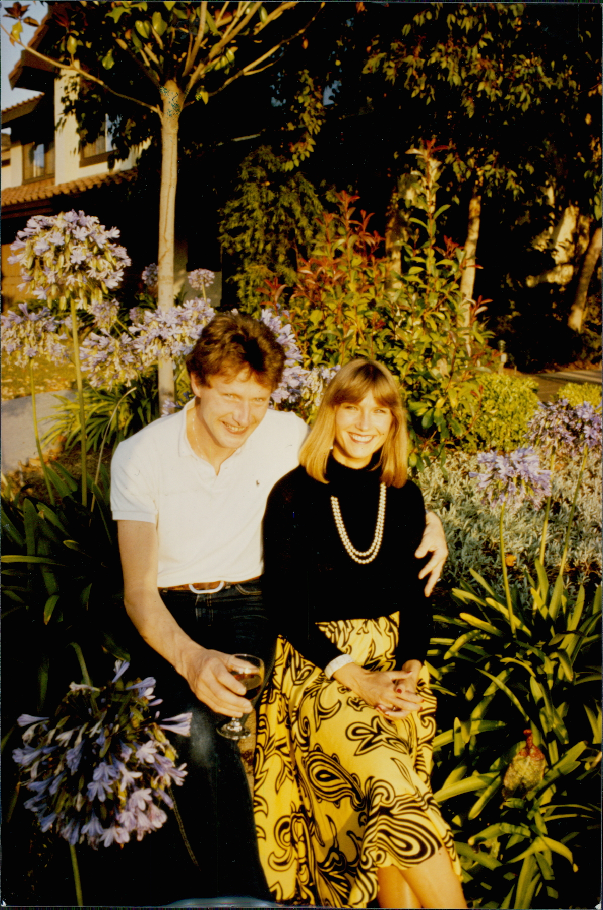

Ullis Haus am Kuykendall Place.
1980
Hilde und ich kamen mit je einem Koffer in Kalifornien an. Sonst hatten wir nichts. Zunächst wohnten wir bei meiner Schwester Ulli und ihrem Mann Derek am Kuykendall Place 3382 in San Jose. Als Erstes brauchten wir ein Auto. In Amerika geht so etwas ziemlich schnell.
Derek hatte jemanden aufgetan, der seinen alten „Hirsch“ verkaufen wollte. Es handelte sich um einen Ford LTD Country Sedan Baujahr 1971. V8-Motor, 5,70 Meter lang und ein Benzinverbrauch, bei dem einem schwindelig werden konnte. Wenn man ihn nicht sah, dann roch man ihn. Für 500 Dollar gehörte er uns. Ziel Nummer eins war erreicht.

Mit meinem internationalen Führerschein durfte ich zunächst fahren. Vorausgesetzt, der Hirsch sprang an. Das war nämlich nicht garantiert. Manchmal hing der Anlasser. Dann begann das Ritual. Zunächst wurde reichlich Benzin in den Vergaser gepumpt und anschließend lange georgelt. Manchmal sprang der Motor an. Manchmal nicht.
Dann war meist der Magnetschalter des Anlassers fest. Er saß irgendwo tief unten im Motorraum und war schlecht erreichbar. Aber Not macht erfinderisch. Man nehme eine lange Eisenstange und einen Hammer. Dann halte man die Stange an den Magnetschalter und klopfe mit Schmackes dagegen. Nach einigen Versuchen gab der Schalter meist auf. Dann fuhr ich mit dem Hirsch über den Highway 101 nach San Francisco zur Universität.
An unserem zweiten Wochenende veranstalteten Ulli und Derek einen „Welcome Shower“. Familie, Freunde und Bekannte kamen vorbei. Jeder brachte etwas mit: Geschirrtücher, Kochtöpfe, Kaffeekessel oder andere Dinge, die man in einem neuen Haushalt brauchen konnte. Einige Tage zuvor hatten wir uns um die Anmietung eines kleinen Hauses im Sunset District beworben. Es lag in der 39th Avenue, nur wenige Minuten vom UCSF Medical Center entfernt, meiner zukünftigen Arbeitsstelle.
Unter den Gästen war auch Jim Althoff, Dereks Onkel. Jim hatte nach dem Krieg mit seiner Spirituosenkette „Ernie's Liquor“ ein beachtliches Vermögen aufgebaut. Mitten in der Feier klingelte das Telefon. Am Apparat war Joann, die Vermieterin des Hauses. Wir hatten die Zusage. Später erfuhren wir, dass ihre Vorfahren aus Deutschland stammten. Vielleicht half das bei ihrer Entscheidung.
Jedenfalls: Wir hatten ein Zuhause. Im Sunset District. Mit Blick auf den Pazifik. Wir waren überglücklich.
Ulli verkündete die Nachricht sofort der versammelten Gesellschaft und stellte die entscheidende Frage: „Hat vielleicht jemand Möbel für die beiden?“ Jim meldete sich sofort. Er habe jede Menge Möbel. Allerdings seien sie nicht mehr ganz neu. Wir könnten sie uns ja einmal ansehen. Jim hatte kurz zuvor mehrere Mietshäuser gekauft und renoviert. Die ausrangierten Möbel standen noch in einer Tiefgarage.
Wir fuhren hin und staunten nicht schlecht. Es gab einfach alles: massive Schränke, Betten mit Matratzen, Sofas, Sessel, Teppiche, Tische und Stühle. Und das meiste war in richtig gutem Zustand. Derek arbeitete damals bei AirCal. Die Fluggesellschaft verfügte über große Lastwagen, die Mitarbeiter kostenlos ausleihen konnten. Also luden wir Möbel. Und luden noch mehr Möbel.
Keine zwei Wochen nach unserer Ankunft besaßen wir ein Auto und ein komplett eingerichtetes Haus im Sunset District mit Blick auf den Pazifischen Ozean.
Wir kamen mit zwei Koffern nach Kalifornien. Und nun waren wir richtig angekommen. Was waren wir glücklich. Ein perfekter Start.
So konnte es weitergehen.